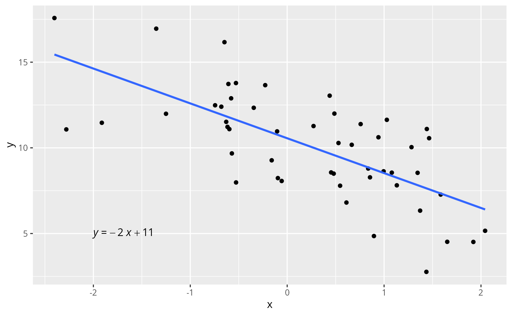

Vamos utilizar a função reglin::rlm() para gerar uma
amostra de \(n=50\) observações
considerando o seguinte modelo de regressão linear simples:
\[\begin{equation} y_{i} = 10 - 2x_{i} + \epsilon_{i}, \end{equation}\] em que \(\epsilon_{i} \overset{\text{i.i.d.}}{\sim} N(0, \sigma)\), \(i=1, \cdots, n,\), com \(\sigma = 2\).
# anexando os pacotes necessários:
library(reglin)
library(tidyverse)
library(ggpubr)
# fixando a semente:
set.seed(1234567890)
n <- 50
sigma <- 2
beta <- c(10, -2)
data <-data.frame(x=rnorm(n))
simdata <- rlm(~x, data = data, beta = beta, sigma = sigma)
glimpse(simdata)
#> Rows: 50
#> Columns: 2
#> $ x <dbl> 1.34592454, 0.99527131, 0.54622688, -1.91272392, 1.92128431, 1.37191…
#> $ y <dbl> 8.542454, 8.630938, 7.789636, 11.463493, 4.508771, 6.334617, 11.9887…O diagrama de dispersão entre \(x\) e \(y\), fundamental para a verificação da existência de relação linear entre essas variáveis, pode ser obtido da seguinte forma:
# plotando o diagrama de dispersão:
ggplot(simdata, aes(x=x, y=y)) +
geom_point() +
geom_smooth(method = "lm", se = FALSE) +
stat_regline_equation(label.x = -2, label.y = 5, aes(label = ..eq.label..))
#> `geom_smooth()` using formula 'y ~ x'
Os coeficientes estimados são apresentados a seguir: